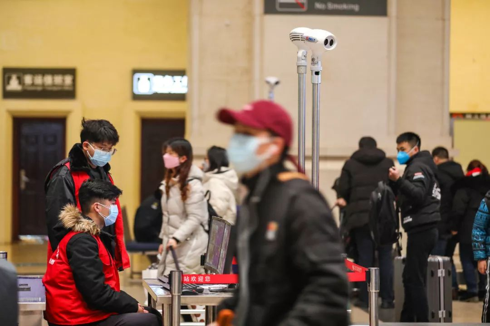

气溶胶传播新冠病毒？医学专家提醒尚缺充分研究佐证
原文链接 备份链接 _ 气溶胶、消化道是否为传播途径在新冠肺炎疫情中牵动人心，在等待医学界给出明确答案时，必要的防护仍是关键，但防护过度则大可不必 _ 文 |《财经》记者 信娜 孙爱民 实习记者 朱贺 **图 | 李斯洋 ** 编辑 | …

2月8日，上海市疫情防控工作领导小组举行的新闻发布会上，上海民政局副局长曾群表示，目前可以确定的新冠肺炎传播途径主要为直接传播、气溶胶传播和接触传播。
“气溶胶传播”被明确为新冠肺炎传播途径之一，引发了热议。就在3天前，国家卫健委网站公布的《新型冠状病毒感染的肺炎诊疗方案（试行第五版）》中，对于病毒传播途径的描述，在“经呼吸道飞沫和接触传播是主要的传播途径”基础上添加了一条新的表述，当时尚且十分谨慎——“气溶胶和消化道等传染途径尚待明确”。
气溶胶传播意味着什么？新冠肺炎会不会防不胜防了？本刊专访了中科院地球环境研究所研究员、中科院气溶胶化学与物理重点实验室主任、国际气溶胶学会秘书长曹军骥，南京大学大气科学学院教授、大气物理系系主任汪名怀，以及北京佑安医院感染中心副主任医师李侗曾。他们一方面都认为，新型冠状病毒通过气溶胶传播的可能性很大；另一方面，也提醒大家在做好防护措施的同时，不必产生太强的恐慌心理。
记者 | 王梓辉 严岩

气溶胶传播新冠病毒的迹象？
《三联生活周刊》：上海市疫情防控工作领导小组新闻发布会上，将气溶胶传播作为新冠肺炎传播途径之一。从您的专业角度看，是否能够确定新冠病毒可以通过气溶胶传播？
曹军骥：首先，发布会的内容较为简略，没有对这个结论如何得出作太多的说明。但是，这种说法不太严谨。因为新型冠状病毒扩散了一个多月的时间，还没有那么多研究数据来确证这件事情，而且当下要做准确的研究非常困难。
我个人认为，作为防疫部门，从管理角度这么说没有太大问题，但是从学术角度，不能说确证了，只能说有很大的可能性。
《三联生活周刊》：从目前的数据来看，您是否发现了一些通过气溶胶传播新冠病毒的迹象？
曹军骥：目前全国报道的被感染病例还是以跟病人有接触为主，但气溶胶感染的风险仍然不小。举个例子，我专门看了陕西省的数据，陕西省大部分病例是输入型病例，但从2月1号开始，陕西出现了无明显接触史的病例，到2月8日已经增长到了11例，这个苗头一定要引起高度重视。无明显接触史的病例就是经流行病学调查，无法找到这个人与哪个病人有明显接触的历史，这就说明他很有可能不是通过接触传播和直接传播，那么就是通过气溶胶传播出来的。目前这种病例占当地扩散病例的比例较低，但也有不小的风险，所以要提醒大家特别注意气溶胶传播途径的危害。

图 | 摄图网
《三联生活周刊》：可能的气溶胶传播渠道是新冠病毒特有的吗？
曹军骥：回看过往，研究人员曾发现SARS病毒通过空气气溶胶路径传播的明确证据。2004年，中国香港学者Yu et al.在《新英格兰医学杂志》发表论文称，通过对SARS期间香港淘大花园病例分布进行研究，发现SARS病毒可能通过空气进行传播。当时香港淘大花园有300多人感染SARS病毒，研究人员调查发现楼宇通风井内存在病毒，利用计算流体力学方法估计从通风井逸散的含病毒气溶胶在楼宇间的扩散情况，发现计算的气溶胶分布与实际病例分布情况吻合较好，推断SARS可能通过空气传播。
虽然因为现场难以复原、环境中病毒难以测试等原因，相关的研究案例并不多，但是从经验来看，很多呼吸道疾病类的病毒都明确存在气溶胶传播途径。那么从理论上，新冠病毒和SARS病毒一样，也有非常大的可能性是可以通过气溶胶途径传播的。

《三联生活周刊》：新冠病毒之前也被认为有粪口传播的特性，这是否也与气溶胶传播有关？
曹军骥：从严格意义上讲，我认为新冠病毒即使存在粪口传播，也是一种不重要的途径，为什么呢？因为粪口传播主要是针对消化道病毒的，比如排出来的粪便进入污水里面，被人接触到了感染，但是它还是一种接触。
另一方面，粪口传播要通过气溶胶媒介来进行，那就像是香港淘大花园那个案例一样：排泄物排到下水道，存于污水管内的污水干燥或雾化后会变成病毒气溶胶，然后被吸入到人住的室内，导致人吸入而感染。为杜绝这种可能性，就得对医疗废弃物加强管理，包括病患者的粪便、尿液、呕吐物都要清理干净，防止其通过气溶胶途径的感染。
气溶胶是怎么传播的？
《三联生活周刊》：气溶胶到底是什么？它是如何产生的呢？
汪名怀：气溶胶是悬浮在空气中的液体或者固体小颗粒。大家熟悉的PM2.5颗粒物，其实就是一类气溶胶粒子。
曹军骥：其实，我们所有人每时每刻都在排出气溶胶，从呼吸到说话、唱歌、打喷嚏，产生于基本的生理活动中。研究指出，打一个喷嚏可能会产生多达4万个直径在0.5~12微米之间的液滴，并可能以高达100 m/s的速度被排出；咳嗽最多可产生3000个液滴核，大约与5分钟的谈话时间产生的液滴相同。其中大尺寸的颗粒物容易沉降到表面，小尺寸的就有可能产生感染性气溶胶。世界卫生组织2009年的报告就曾指出，病毒或细菌可以通过气溶胶经长距离传播而在短期内导致大面积感染。
《三联生活周刊》：那么，“气溶胶”和 “飞沫”有什么区别？
曹军骥：气溶胶和飞沫二者最主要的区别就是粒径，也就是颗粒的大小。比如我们说话或打喷嚏时会喷出飞沫，那些经常用肉眼就能看得见的飞沫粒径都已经是毫米级了。而气溶胶是那些稳定分散悬浮在空中的液态或固体小颗粒，通常在100微米（0.1毫米）以下。

图中红色是气溶胶，绿色是飞沫
一般室内环境中，大于100微米的飞沫颗粒通常在蒸发之前就会落到表面，而小于100微米的颗粒则在到达表面之前蒸发形成飞沫核，通常10微米的飞沫在毫秒级时间内即可形成飞沫核。这种量级的颗粒物在空气中是落不下来的，因为它的重力作用很小，它就悬浮在空气中，随着气流飘散到其他地方，污染了空气，这个就是问题所在。通常气溶胶的生命周期是一个礼拜，有长有短，平均下来是7天。在这7天以内，它会在空气中一直飘着，沉不下来。
另外，两种传播的距离也不同。飞沫因为其粒径一般为1至5毫米，一般在传染源1至2米左右的空间内传播，属于近距离传播。而气溶胶粒径一般0.1毫米及以下，随气流运动，其传播距离可达数百米，增加了无接触传播的风险。
汪名怀：正因为气溶胶粒子小很多，气溶胶粒子难以像飞沫一样很快落到地面，在大气中停留时间会比较长，这样也就传播得比较远。比如下降3米的距离，100微米的粒子只需要10秒，5微米的粒子需要一个小时，而小于3微米的粒子一般是悬浮在大气中，难以在短时间内沉降到地表。
《三联生活周刊》：什么情况下最容易通过气溶胶感染病毒？
李侗曾：气溶胶传播本身不是一个新奇的途径，在很多传染病里都存在，但是形成的条件很苛刻。打一个喷嚏可以产生飞沫，也可以产生气溶胶，但如果是一个空旷的区域，很难发生气溶胶的传播。人们被感染的最大可能是：在一个密闭环境下，有大量的病毒释放。比如电梯里，一个患者不断咳嗽，然后他刚出电梯，你就没戴口罩走了进去，被感染了，这就是通过气溶胶传播感染的。
曹军骥：病毒气溶胶的传播主要还是在封闭空间和半封闭空间，大街等开放空间一般没问题。这是因为，第一，病毒气溶胶在空气中会“失活”。病毒离开体液在空气中漂浮过程中生存环境变化，更容易死去。且空气中有紫外线、有自由基，自由基都是有氧化性很强的物质，它们可以把病毒给杀死，或者是让毒性降低，这是一种情况。第二，在开放空间，就算有人一口气排出了很多病毒，但在空气中也很容易就稀释掉了，病毒浓度就会降低到安全限度以内。所以封闭空间的经常通风是很重要的，这一点在WHO 2009年的报告中，是作为降低感染风险的一个重要举措明确提出来的。
气溶胶传播如何防护？
《三联生活周刊》：气溶胶生命周期长，传播距离远，是不是意味着气溶胶传播的威胁性非常大？
李侗曾：对于气溶胶传播，不必过于恐慌。距离越远，被空气稀释就越明显。举个不恰当的例子，我们往长江里吐了口水，最终，成分都流到大海里了，不会产生太大影响，所以我强调气溶胶感染的形成条件比较苛刻。
曹军骥：气溶胶传播的可能性确实存在，但是威胁并不太大。这是因为，第一，气溶胶传播的浓度很低。它不像接触传播那样，比如电梯按钮，只要用手一摸就接触到了。在一般的开放环境中，气溶胶本身的浓度是很低的。第二，气溶胶传播的概率也很低。在一个不那么封闭的空间里，病毒排出来之后，再被吸入的几率很小。
所以大家不用太恐慌，但还是要做好个人的防护措施。强调气溶胶传播的可能性，就是要提醒大家，不要想着不接触就没事了，不接触也是有可能被传染的。

《三联生活周刊》：针对气溶胶传播，个人应该如何防护？
曹军骥：气溶胶传播问题主要出现封闭或者半封闭空间，开放空间没问题，大家不用盲目恐慌，认为当前环境空气中到处弥漫着病毒。
第一，自己要尽量降低接触病毒的可能性。比如去外面的陌生场所，一定要做好个人防护，出门的时候尽量佩戴口罩。
第二，防止别人可能的传播。跟外人接触必须全程带口罩，尽量不要去人群聚集的地方，尤其是封闭和半封闭通风不畅的空间。
第三，严防病毒的存在。居家或者办公室等封闭空间内，要尽可能采用多种办法杀灭病毒或者降低病毒的浓度：包括采用如酒精、消毒液、紫外灯、有杀菌功能的净化器等主动杀灭新毒，减少其存活几率；另外要注意自然通风，或者使用空气净化器，降低可能的病毒浓度。
作者档案

王梓辉
可慢慢而归
26分钟前

_

三联生活周刊
个人微信：guitumanman
个人微博：汉瑟姆WANG
_

严岩
请了解、或亲自deal过炎症风暴/细胞因子风暴患者的专家（不限于呼吸科大夫或其他感染内科大夫）联系我，添加微信烦请自我介绍，谢！
26分钟前


三联生活周刊
个人微信：roseisnotred
⊙文章版权归《三联生活周刊》所有，欢迎转发到朋友圈，转载开白请联系后台。未经同意，严禁转载至网站、APP等。
严徽因
免疫力就是战斗力，加油！
微信扫一扫赞赏作者 赞赏
长按二维码向我转账
免疫力就是战斗力，加油！
受苹果公司新规定影响，微信 iOS 版的赞赏功能被关闭，可通过二维码转账支持公众号。
原文链接 备份链接 _ 气溶胶、消化道是否为传播途径在新冠肺炎疫情中牵动人心，在等待医学界给出明确答案时，必要的防护仍是关键，但防护过度则大可不必 _ 文 |《财经》记者 信娜 孙爱民 实习记者 朱贺 **图 | 李斯洋 ** 编辑 | …
原文链接 备份链接 新型冠状病毒无症状感染者出现，令许多公众担心这会让病毒传播更佳防不胜防。事实上，大多数病毒、细菌导致的疾病都可能出现“无症状感染者”。新型冠状病毒的无症状感染者出现需要引起我们的警惕，但不必恐慌。 实习记者 | 李秀 …
原文链接 备份链接 【财新网】（记者 宿慧娴 黄蕙昭）武汉大学中南医院最新论文显示，新冠抗疫过程中，院内感染应高度警惕。该院从1月1日至1月28日收治的138名新冠肺炎确诊患者中，约41.3%的患者属于院内感染，其中40人（29%）为医 …
原文链接 备份链接 _ 新冠肺炎核酸检测阳性比率低，与病情发展阶段、采集流程是否规范、试剂盒的质量相关。为减少可能的“漏诊”，专家建议对不同厂商的试剂盒进行系统对比 _ 文 |《财经》记者 孙爱民 言清 王小 编辑 | 王小 近日在湖北 …
原文链接 备份链接 【财新网】（记者 王和岩）疫情袭来已遍布全国各省份。在距离武汉最北的省份黑龙江，聚集性疫情成为防控重点。截至2月6日24时，各地共报告新型冠状病毒感染的肺炎聚集性疫情48起、发病194人，波及或暴露630人，死亡3 …